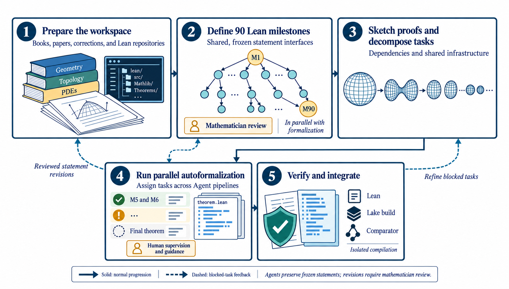
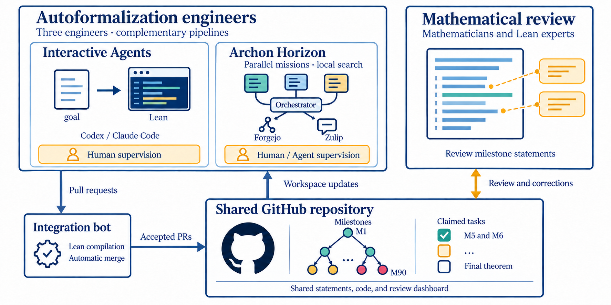

AI agents, guided by a human-written blueprint and 90 milestone statements, produce a Lean 4 formalization of the Poincaré conjecture whose target statements use only Mathlib.
Abstract
We present an AI-assisted Lean 4 formalization of the Poincaré conjecture. The project began with limited reusable formal infrastructure for the geometric analysis behind the proof. To organize this work, we combined a proof blueprint prepared by mathematicians with explicit milestone statements. These milestones enabled parallel agent work and gave mathematicians clear points to locate blockers and provide effective mathematical guidance. Our analysis identifies the human interventions and organizational choices behind this workflow. The project provides a starting point toward reusable infrastructure for future formalization projects; such infrastructure, once developed, could eventually reduce the cost of verifying mathematical results in geometric analysis.
Problem
The goal is to formalize the Poincaré conjecture in Lean 4. Mathlib lacked much of the geometric-analysis infrastructure the proof needs, including Ricci flow and Riemannian comparison geometry. The authors also wanted to record how a large AI-assisted formalization is organized and where human effort goes.
Approach
Mathematicians wrote a natural-language blueprint following Morgan–Tian. This was split into about 90 milestones, each with a Lean statement and the definitions it requires. AI agents worked on independent milestones in parallel under engineer coordination. An integration bot compiled and merged pull requests, and mathematicians reviewed statements and resolved mathematical blockers.

Figure 1 : Workflow for converting a mathematical target into a verified Lean formalization. Solid arrows indicate the ordinary progression of work. Dashed arrows indicate that a blocked task can return to source gathering, statement revision, or further decomposition. Human decisions determine the mathematical scope, review priorities, and acceptance criteria, while agents assist with source anal

Figure 2 : Team organization and coordination for autoformalization. Engineers use goal-oriented interactive coding agents and Archon Horizon to develop Lean proofs under human supervision. Contributions pass through an integration bot that compiles Lean code and automatically merges accepted pull requests into the shared GitHub repository. The repository coordinates milestone claims, distributes
Results
The development passes a full Lean build and Comparator verification against smooth and topological Poincaré statements written using only Mathlib. The initial development had about 3.2 million lines of Lean code, and about 48% of the source is background infrastructure, such as Bishop–Gromov comparison, short-time Ricci-flow existence, Shi's derivative estimates and the Hurewicz theorem. The authors classify the stalls they hit as mathematical gaps, Lean implementation problems and coordination problems.